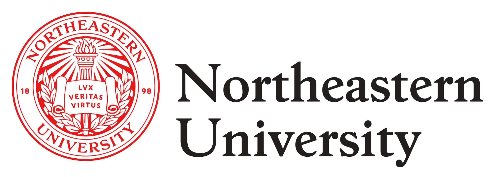

I currently work in cognitive neuroscience research at Northeastern University’s College of Science, focusing on perceptual learning and brain-training interventions. My work involves experimental design, behavioral data modeling, and visualization using Python, MATLAB, and R. I study how attention and memory interact during visual processing tasks and how targeted training can enhance cognitive performance.
At Northeastern’s School of Law, I use machine learning and econometrics to analyze public health data, particularly in the opioid crisis space. My research models opioid usage hotspots across Boston and studies the effects of prevention spending and policy interventions. I presented this work at RISE 2025, highlighting improvements in stigma reduction and overdose response training.

Previously, I conducted biomedical research at Hong Kong Baptist University School of Medicine, identifying risk factors for hepatocellular carcinoma (HCC). I analyzed liver tissue samples and explored early diagnostic markers. I also worked at HKU’s School of Clinical Medicine, studying cardiovascular biomarkers and patient data trends to support cardiac outcome analysis.